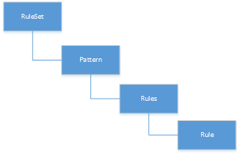

RuleMSX¶
RuleMSX views each rule exists as a stand-alone rule that is either true or false at any given moment.
A pattern contains one or more rules. All the rules in a pattern must evaluate to true for the action attached to the pattern to be executed. In this case, the action itself is responsible for introducing the new rules to be checked and/or new patterns or patterns to be removed from the set.
RETE Algorithm¶
The word rete is Latin for net or network. The rete algorithm is essentially a pattern matching algorithm.
The main objective behind rete algorithm for RuleMSX is to decouple the various trading or business rules from rule execution or executing sequences on a particular data set.
The data set here can be both trading data obtained from EMSX API, market data, or non-trading based proprietary data set.
Earlier Version¶
The initial approach to RuleMSX handled the rete in the following structure where each RuleSet consists of a single rule. Each rule consisted of child rules and rule evaluator.

As part of the reiteration of RuleMSX, we have made the changes to reflect the rete algorithm in the following structure:
